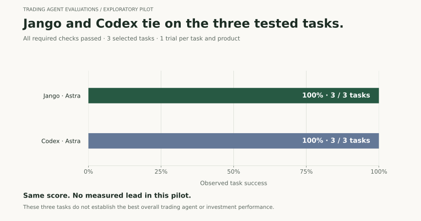
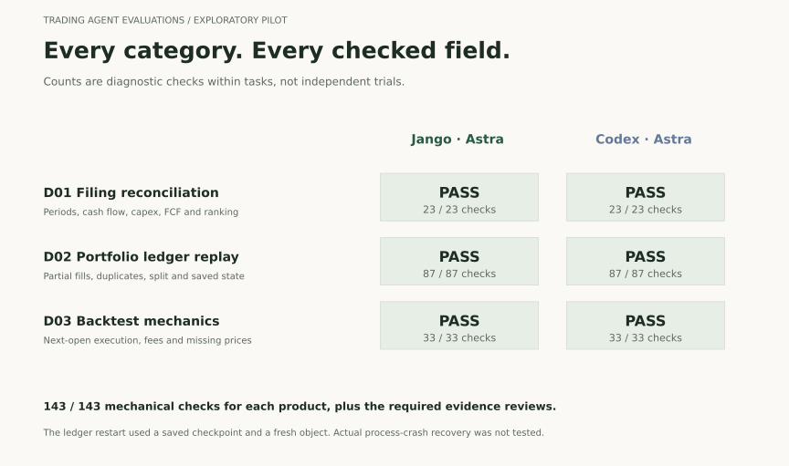
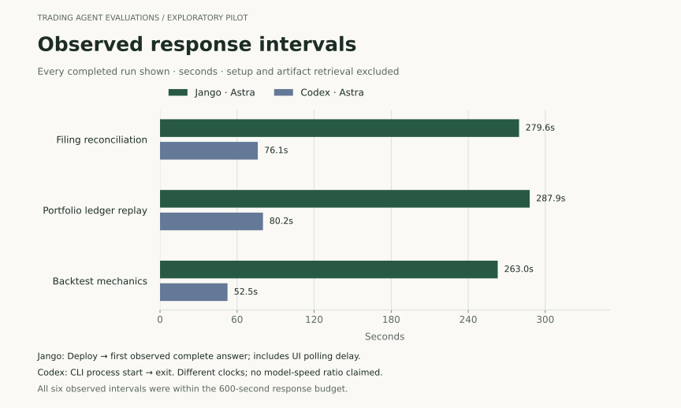

Jango and Codex tie on the three tested tasks.
Both completed filing reconciliation, portfolio ledger replay and backtest mechanics with all required checks passing.
Same score. No measured lead.
Each task counts once. A pass requires the requested answer, supporting evidence and timely completion. Scores and case selection are unchanged from the frozen study.

What each product got right
All three planned probes are shown. The check counts help locate mistakes; they are not additional independent trials.

| Task | Jango | Codex |
|---|---|---|
| Filing reconciliation | 23 / 23 | 23 / 23 |
| Ledger replay | 87 / 87 | 87 / 87 |
| Backtest mechanics | 33 / 33 | 33 / 33 |
D01 · Filing reconciliationBoth pass
Periods, cash flow, capex, FCF and ranking.
| Required evidence check | Jango | Codex |
|---|---|---|
| numeric answer | Pass | Pass |
| requested primary source figures | Pass | Pass |
| period units definition and ranking | Pass | Pass |
| final observed within budget | Pass | Pass |
D02 · Portfolio ledger replayBoth pass
Partial fills, duplicates, split and saved state.
| Required evidence check | Jango | Codex |
|---|---|---|
| numeric answer | Pass | Pass |
| executed artifact independently reproduces answer | Pass | Pass |
| required artifacts retained | Pass | Pass |
| checkpoint state verified | Pass | Pass |
| checkpoint preserves seen fill ids | Pass | Pass |
| checkpoint preserves seen signal ids | Pass | Pass |
| final observed within budget | Pass | Pass |
D03 · Backtest mechanicsBoth pass
Next-open execution, fees and missing prices.
| Required evidence check | Jango | Codex |
|---|---|---|
| numeric answer | Pass | Pass |
| executed artifact independently reproduces answer | Pass | Pass |
| required artifacts retained | Pass | Pass |
| final observed within budget | Pass | Pass |
Expand a test to see the required evidence checks. Download every expected and observed field ↗
Response intervals, shown separately
Codex had shorter recorded intervals in these runs. Jango was measured from Deploy to the first observed complete answer; Codex was measured by CLI process wall time. Polling delay and product setup differ, so these are not exact model-speed comparisons.

How the results were checked
- Freeze the task. Three prompts, numerical answer keys, tolerances, two configurations, one trial each and a 600-second response budget were recorded before execution.
- Check the answer. Every requested numerical and decision field was compared with the same frozen key. Tolerances were 0.000001 for money or units and 0.01 percentage points.
- Verify the evidence. Filing figures and periods were checked in original official reports. Replay and backtest source files were inspected and independently executed. Required outputs and checkpoint contents were checked separately.
- Count complete tasks. A task passes only when every required answer and evidence check passes within the response window. The primary score is tasks passed divided by the three tasks. Individual field counts do not change task weights.
- Keep the full record. All planned tasks remain. Codex D01 had one failure before prompt delivery, followed by the first delivered attempt; Jango D01 had two empty, non-running drafts. These setup failures and all later traces remain in the archive.
The parser was implemented during collection, using the frozen keys and equivalent JSON representations for both products. No subjective model judge assigned these pilot scores. The original archive passes 591 integrity checks; nine behavioral grader tests cover malformed output and incorrect calculations.
What this pilot supports
Both tested configurations solved these three selected tasks. They retained reproducible programs for the two synthetic computation tasks. This is evidence of capability on these cases.
What remains untested
Continuous monitoring, actual process-crash recovery, broker execution, live or paper investment returns and overall superiority. Saving and reloading an object is a narrower test than surviving a process crash.
Why no confidence interval? These are three deliberately selected discovery cases with one trial each, not a representative random sample. Treating the 143 fields as 143 independent experiments would overstate the evidence.
Both requested or displayed Astra. Identical provider snapshots are unverified. Jango had native delegation and financial integrations; Codex used the recorded CLI web and local-computation profile. This is a product-configuration comparison, not an isolated model experiment. Native UI captures preserve rendered text, not verified backend bytes.
Difficulty: both products passed everything, so this pilot has a ceiling effect. Harder, fresh tasks must be fixed before another run; existing scores should not be capped or reweighted to manufacture a separation.
Downloads and earlier results
Results JSON · Full field breakdown · Evidence hashes · Visual package hashes
Open the earlier multi-product evaluation ↗
This is a separate exploratory cohort. It does not replace the earlier results or pool different models, prompts and tool access into a new overall ranking. Raw responses, tool traces, programs, source checks and frozen prompts remain in the complete local and Desktop archive.